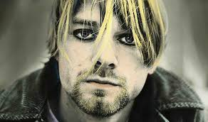
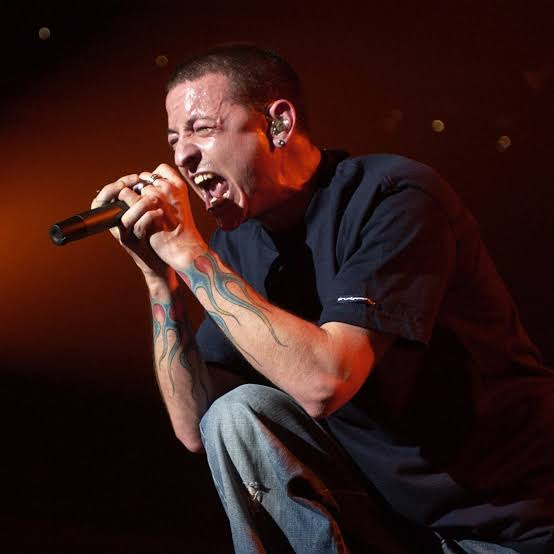

Відкриття в новій вкладкі
Таблиця-1Відкриття в новій вкладкі
Таблиця-2Відкриття в новій вкладкі
Таблиця-3Відкриття в новій вкладкі
Куби

B середине 1980-х годов Кобейн начал увлекаться панк-роком, а в 1987 году вместе с Кристом Новоселичем
образовал группу «Нирвана». После заключения договора с инди-лейблом Sub Pop «Нирвана» выпустила свой
дебютный альбом Bleach. На волне интереса к сиэтлской рок-музыке группа подписала контракт со
звукозаписывающей компанией DGC Records.
Второй альбом «Нирваны» — Nevermind — вышел в 1991 году и принёс Кобейну всемирную известность. Песня
«Smells Like Teen Spirit» стала хитом, а сам альбом поднялся на вершину альбомного чарта Billboard 200.
Стиль сиэтлских групп альтернативного рока получил название «гранж» и стал самым популярным направлением
рок-музыки первой половины 1990-х. Кобейна называли «голосом поколения» из-за бунтарского образа,
запоминающейся музыки и искренних текстов песен, выражавших эмоции подростков того времени.
Обратной стороной славы Кобейна стали его депрессия и зависимость от героина. После женитьбы на
рок-певице Кортни Лав и рождения ребёнка музыка отошла для него на второй план. В составе «Нирваны»
музыкант успел выпустить сборник редких песен Incesticide (1992) и альбом In Utero (1993), но из-за
проблем со здоровьем ему пришлось прервать гастроли. После нескольких тщетных попыток излечиться от
наркотической зависимости 5 апреля 1994 года Курт Кобейн покончил жизнь самоубийством.
Кобейн считается одним из ключевых музыкантов гранжевой сцены и входит в число 100 величайших гитаристов
всех времён по версии журнала Rolling Stone. В 2014 году был посмертно включён в Зал славы рок-н-ролла в
составе «Нирваны».

Aмериканский рок-музыкант и автор песен. Наиболее известен как вокалист группы Linkin Park. Также
являлся вокалистом таких коллективов, как Grey Daze, Dead by Sunrise и Stone Temple Pilots[6].
В 1993 году Беннингтон стал сооснователем группы Grey Daze, в которой проработал вокалистом до 1998
года, записав два студийных альбома. Первую широкую известность в качестве вокалиста получил в 2000 году
после выхода дебютного полноценного студийного альбома Hybrid Theory группы Linkin Park, с участниками
которой годом ранее записал мини-альбом Hybrid Theory EP, включавший в себя композиции, не вошедшие в
полноценный альбом 2000 года. Полноценный альбом Hybrid Theory принёс группе мировой коммерческий успех,
став самым продаваемым дебютным альбомом десятилетия, а также одним из немногих альбомов, когда-либо
достигавших такого количества продаж[7]. Следующие шесть студийных альбомов Linkin Park — от Meteora
(2003) до One More Light (2017) — продолжили коммерческий успех группы.
В 2005 году параллельно с работой в Linkin Park Беннингтон создал группу Dead by Sunrise, единственный
альбом которой, Out of Ashes, был выпущен в октябре 2009 года. Также с 2013 по 2015 годы он являлся
вокалистом Stone Temple Pilots, с которой в октябре 2013 года выпустил мини-альбом High Rise[англ.].
20 июля 2017 года Беннингтон был найден мёртвым в своём доме в Палос-Вердес-Эстейтс[англ.],
Калифорния[8][9]; его смерть была признана самоубийством через повешение. В том же месяце различными
изданиями Беннингтон был признан одним из величайших рок-вокалистов своего поколения[10]. Тогда же
издание Hit Parader поместило его на 46 место в своём списке «100 метал-вокалистов всех времён»[6], а
издание Billboard выпустило статью с заявлением о том, что Беннингтон «перевернул вселенную ню-метала»